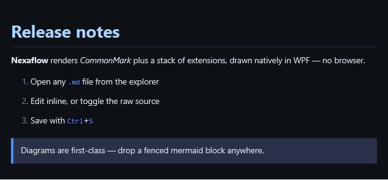
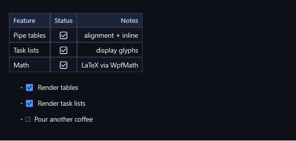
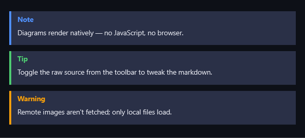
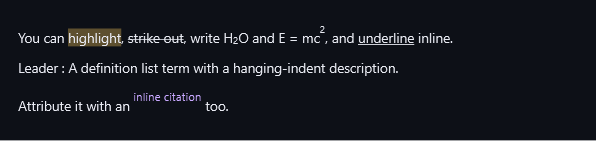
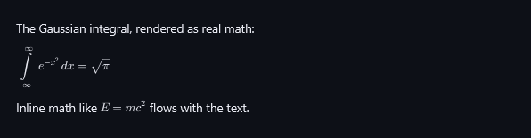

This page covers reading and writing a document. The drawing — diagrams, codes, chemistry and plots — is large enough to have pages of its own, listed under More in a document.
Viewing & authoring
Markdown opens in its own tab — there's nothing to configure.
- Open — double-click any
.mdfile in the file explorer (or open it from a project, a search result, or a snaplink). It lands in a Markdown tab. - Read & edit inline — by default the tab shows the rendered document and lets you edit it in place: type into a heading, a list, or a paragraph and it stays formatted as you go.
- Toggle the raw source — flip the toolbar switch to drop to plain Markdown source when you want to hand-tune the exact text (front-matter, a fiddly table, a diagram fence), then flip back.
- Save —
Ctrl+S. The tab tracks unsaved changes and the title shows when you're dirty.
Everything below works in both the rendered view and the preview — it's the same renderer.
The basics
Standard CommonMark — headings, bold, italic, inline code, ordered and unordered lists,
links, and block quotes — all themed to match the app.
# Release notes
**Nexaflow** renders _CommonMark_ plus a stack of extensions, drawn natively in WPF — no browser.
1. Open any `.md` file from the explorer
2. Edit inline, or toggle the raw source
3. Save with `Ctrl`+`S`
> Diagrams are first-class — drop a fenced mermaid block anywhere.

Tables & task lists
Pipe tables support per-column alignment and inline formatting; task lists render as tidy check glyphs.
| Feature | Status | Notes |
|:------------|:------:|-------------------:|
| Pipe tables | ✅ | alignment + inline |
| Task lists | ✅ | display glyphs |
| Math | ✅ | LaTeX via WpfMath |
- [x] Render tables
- [x] Render task lists
- [ ] Pour another coffee

Callouts
GitHub-style alert blocks (> [!NOTE], [!TIP], [!IMPORTANT], [!WARNING], [!CAUTION]) become
coloured, labelled callouts.
> [!NOTE]
> Diagrams render natively — no JavaScript, no browser.
> [!TIP]
> Toggle the raw source from the toolbar to tweak the markdown.
> [!WARNING]
> Remote images aren't fetched; only local files load.

Rich inline extensions
Beyond CommonMark you also get highlight (==), strikethrough (~~), subscript (~), superscript
(^), underline (++), definition lists, and citations.
You can ==highlight==, ~~strike out~~, write H~2~O and E = mc^2^, and ++underline++ inline.
Leader
: A definition list term with a hanging-indent description.
Attribute it with an ""inline citation"" too.

Math
Block ($$…$$) and inline ($…$) LaTeX are typeset with real math layout.
The Gaussian integral, rendered as real math:
$$\int_{-\infty}^{\infty} e^{-x^2}\,dx = \sqrt{\pi}$$
Inline math like $E = mc^2$ flows with the text.

More in a document
These are drawn by the same renderer, on your machine, from a fenced block you type.
- Diagrams — twenty-four Mermaid diagram types, from flowcharts and sequence diagrams to Gantt charts, mindmaps, Sankey diagrams and C4 models.
- QR codes & barcodes — QR, linear barcodes, Data Matrix, PDF417 and Aztec.
- Chemistry, word clouds & plots — chemical structures from SMILES, shaped word clouds, and correlation plots over your own data.
Good to know
- It's all local. Diagrams and math render on your machine — nothing is sent anywhere, and the renderer works offline.
- Local images only.
loads local image files; remotehttp(s)anddata:images are not fetched (you'll see the alt text instead). - Copy or save a picture of a diagram. Rest the pointer on a pie chart, a Venn diagram, a formula or a chemical structure and a small toolbar appears at its top right: Copy puts a picture of it on the clipboard, and Save saves it as a PNG wherever you choose. The picture is the diagram as it reads — no caret, selection or placeholder boxes.
- Front-matter config. Several diagrams accept a
--- config: … ---front-matter block to tune their look (colours, sizes, orientation) — see the XY, radar, Sankey and Venn examples in Diagrams: charts & analysis. - What a QR code does is the scanner's business, not the code's. The same Wi-Fi code joins the network when scanned from Android's add a network screen and runs a web search when scanned from a home-screen search widget; a contact card offers to create a contact from inside the phone's Contacts app and to merge into an existing one from a general-purpose scanner. If a code seems not to work, scan it from the app that owns the thing it describes before suspecting the code.
For the engineering-level breakdown of exactly what's supported, see Markdown support.